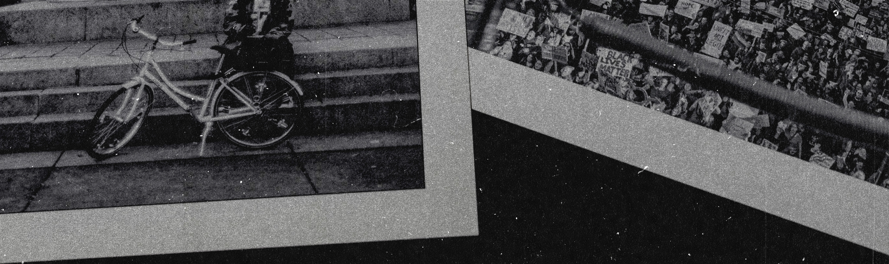

PUBLIC RECORD
WE WERE THERE
Chicago, Illinois — a documentary print publication by Tori “Torsion” Howard — two photographs — 2017 & 2024 — fine art prints from $100.

public record the moment
they’re made.
Different days. Different corners of Chicago. Same undercurrent.
First Day
A quarter million people gathered in downtown Chicago for the Women’s March the day after the inauguration. One pass over the crowd at 1/2500 of a second.
From street level, the march felt loud and chaotic. From above, it became one moving body.
These are opening notes. Enter to read the full record.
Continue Reading First Day →
Residual
A monument in Logan Square marked with fresh spray paint: FIGHT FASCISM. One person and a bicycle sharing the same frame.
Different day, different energy, same political undercurrent written directly into the street.
These are opening notes. Enter to read the full record.
Continue Reading Residual →
the Record
Moab Juniper Baryta Rag — signed by the artist — printed in Chicago.